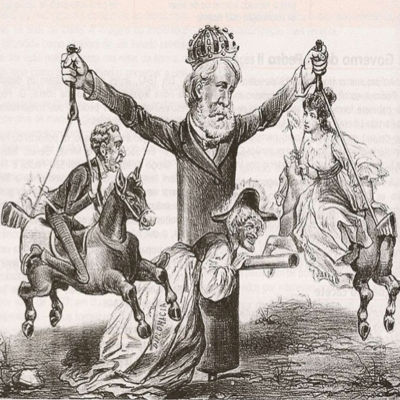
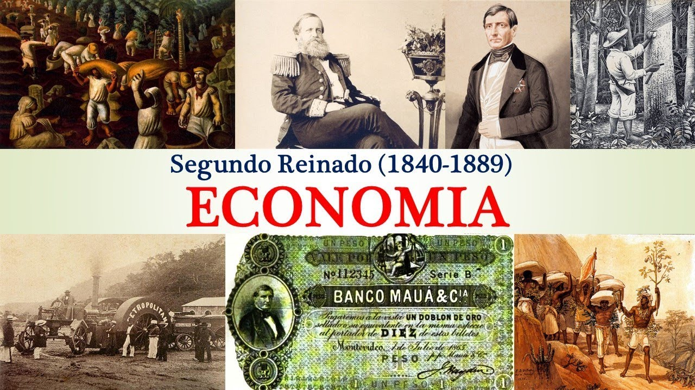
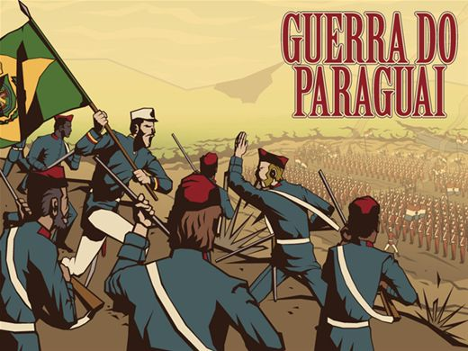
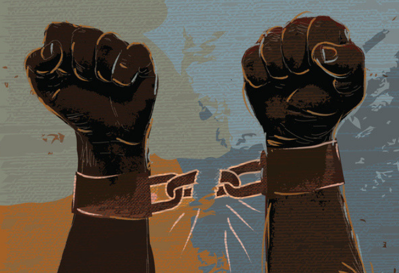
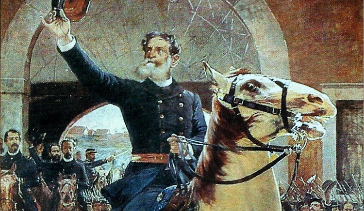

Politica do segundo Reinado
A política do Segundo Reinado é marcada pela presença de dois partidos políticos:
- Partido Liberal, cujos membros eram conhecidos como os “luzia”
- o Partido Conservador, cujos membros eram conhecidos como os “saquarema”
A rigor, ambos os partidos defendiam as ideias de elite, como a manutenção da escravidão. Somente se diferenciavam em relação ao poder
central, com os liberais lutando por mais autonomia provincial e os conservadores por mais centralização. Por causa da abdicação do seu pai,
D. Pedro II sentiu a necessidade de mudar forma de governo. Por isso, em 1847, implanta o parlamentarismo no Brasil. Aqui, o sistema funcionava
um pouco diferente daquele praticado na Inglaterra. Ali, o primeiro-ministro era o deputado do partido mais votado. Já no Brasil, o Presidente de
Conselho (primeiro-ministro) era escolhido, pelo Imperador, a partir de uma lista com três nomes. Este sistema ficou conhecido como parlamentarismo
às avessas. O imperador também detinha o Poder Moderador, mas este foi usado poucas vezes pelo soberano

Economia do Imperio
Nessa época, as excelentes condições de plantio no Vale do Paraíba (RJ) alavancaram a produção e a exportação do café. Posteriormente, os cafezais
se espalhariam por São Paulo. O Brasil começou a exportar mais do que a importar e a procura pelo café era tão grande que havia necessidade de
aumentar a mão de obra. Contudo, a fim de proteger seus negócios, os fazendeiros de café viam com maus olhos as tentativas de qualquer lei que
favorecesse a abolição da escravidão. Por isso, os latifundiários apoiam a vinda de imigrantes, especialmente italianos, para trabalharem nos
cafezais. Em decorrência do crescimento da exportação de café são construídas as primeiras ferrovias e nasceram cidades. Os portos de Santos e Rio
de Janeiro prosperam. Nessa época começam a ser montadas as primeiras fábricas no Brasil, ainda que de forma isolada e em grande parte devido ao
trabalho do Barão de Mauá

Questão Christie
Da mesma maneira, o governo viu-se implicado na Questão Christie (1863-1865) quando houve incidentes com cidadãos britânicos em solo brasileiro. É
importante lembrar que os súditos britânicos não eram julgados pelos tribunais brasileiros se cometessem algum delito no Império do Brasil. A Questão
Christie começou com um altercado entre marinheiros e oficiais britânicos no Rio de Janeiro e pela invasão e confisco de cinco barcos no porto do Rio
de Janeiro, por uma fragata britânica. O governo brasileiro pediu que os responsáveis respondessem judicialmente no país e que fosse paga uma
indenização. Diante da recusa dos britânicos, o Brasil rompeu relações diplomáticas com o Reino Unido por dois anos.
.jpg)
Guerra do Paraguai
No plano internacional, o Brasil se envolveu em atritos com os seus vizinhos, especialmente na região do Prata. Em resposta à invasão do Rio Grande do
Sul, o governo imperial declara guerra ao ditador paraguaio Solano López (1827-1870), no episódio conhecido como Guerra do Paraguai. O conflito ainda
contaria com a participação da Argentina e do Uruguai, e duraria cerca de cinco anos. O Paraguai foi derrotado e Solano López morto por soldados
brasileiros. O Exército se viu fortalecido após o conflito e passou a reivindicar mais espaço na política nacional.

Abolição da escravidão
Essa época é crucial para o processo de abolição das pessoas escravizadas, pois surgem diversas sociedades e jornais contra esta prática. Os escravos se
mobilizam através dos quilombos e irmandades religiosas, mas também solicitam sua liberdade na Justiça. A abolição da escravidão não era desejada pelos
fazendeiros. Estes perderiam o investimento da compra das pessoas escravizadas e teriam que começar a pagar salário, diminuindo assim sua margem de lucro.
Desta maneira, lutam para que o governo pague indenização por cada escravo liberto. Como indenizar os fazendeiros estava fora de cogitação, o governo
promulga leis que visam abolir o trabalho servil de forma gradual. São elas:
- Lei Eusébio de Queirós (1850);
- Lei do Ventre Livre (1871);
- Lei dos Sexagenários (1887);
- Lei Áurea (1888).

O fim de uma era
Ao longo do seu governo, D. Pedro II se contrapôs com a igreja, com os militares e com a elite rural. Tudo isso foi retirando o apoio das figuras importantes
do país ao trono. Alguns episódios direcionaram os acontecimentos para um golpe militar. São exemplos a exigência de que a igreja não acatasse as ordens papais,
sem as mesmas terem ter sido aprovadas pelo imperador, no que passou à História como a Questão Religiosa. No entanto, foi a desvalorização dos militares e o fim
da escravatura que mais incomodaram as elites e forçaram sua deposição. Os militares reclamavam mais reconhecimento, aumento de salário e promoções que não eram
realizadas. Tudo isso fez com que alguns oficiais aderissem aos ideais republicanos. Igualmente, a elite latifundiária não pôde suportar a ideia da abolição da
escravidão. Assim República é instituída, sem participação popular, no dia 15 de novembro de 1889 pelo Marechal Deodoro da Fonsseca o qual foi
o primeiro presidente do Brasil.
